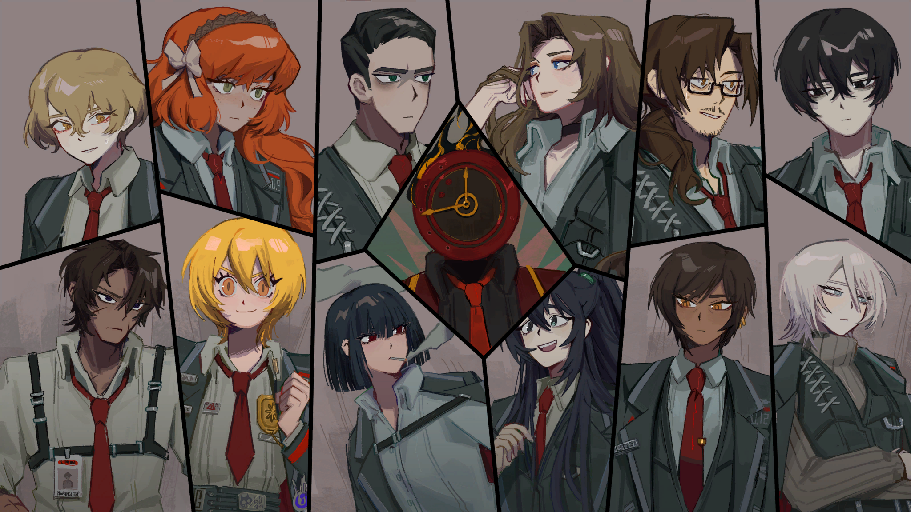
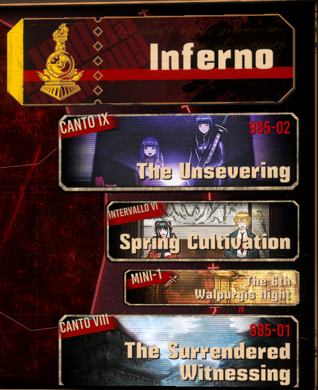

Limbus Company is a turn based role playing game by Project Moon, with a public release in February 27th, 2023. Being the third game the company developed, it further expands on the ways that the residents of "The City" cope with the many threats that roam the region, as the setting is a brutal, fantasy/sci-fi, hyper capitalist dystopia.

The game specifically follows the journey of the Limbus Company Bus, or LCB for short. The team of 13 comprises of 12 "sinners" and their manager, Dante, who are primarily accompanied by their guide, Vergilius, and their bus driver, Charon. The primary objective of the LCB is to retrieve artifacts known as "Golden Boughs". However, whenever the party finds themselves in a position to retrieve a bough, former foes and allies emerge from the past of a sinner to complicate matters.
Within the game itself, each of the aforementioned complications are enclosed within "Inferno", with each scenario bookmarked by a "Canto". As of writing, the game is not complete, but 9 cantos released thus far have predominantly enclosed the specific sinners' issues within themselves; the ramifications of the actions taken may appear in other cantos, but the main threat of the canto is usually identified and dealt with in one canto.

This organization system for the story beats in the game also mean that each canto can be analyzed almost independently by inspecting how the focus sinner of that canto grew at the end of the canto.
The discerning eye would have noted that the sinners' names are very familiar. They actually correspond to key figures, or the main character, of an influential piece of literature in Asia or in Europe. For instance, Dante is the main character of Divine Comedy, and Vergilius is a reference to the guide Virgil in Inferno, the first part of the series. These parallels will be discussed in further detail within the Motivations section.
Lastly, there are some overarching definitions and themes that are necessary to understand the story beats within each canto.
- Mirror Worlds: A multiverse of every possibility that could have ever occured. The protagonistic and antagonistic parties of Limbus Company own technologies that enable them to communicate, and even summon the skillset, of their counterpart from these realities.
- Distortions/Effloresced E.G.O: Possible outcomes when an individual wholehearted belief is abruptly shattered. The targeted individual is approached by a charming voice that tries to convince them into embracing their heightened feelings. Agreeing to this causes distortion, mutating the target into a physical form of their desire, or effloresced E.G.O, a form of weapon or armor harnessing their desire.